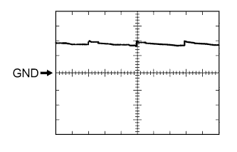

POWER MIRROR CONTROL SYSTEM > TERMINALS OF ECU |
| CHECK OUTER MIRROR CONTROL ECU ASSEMBLY LH |
Disconnect the K8 ECU connector.

Measure the voltage and resistance according to the value(s) in the table below.
| Tester Connection | Wiring Color | Terminal Description | Condition | Specified Condition |
| K8-14 (BDR) - Body ground | R - Body ground | Power source | Always | 11 to 14 V |
| K8-6 (CPUB) - Body ground | L - Body ground | Power source | Always | 11 to 14 V |
| K8-5 (SIG) - Body ground | G - Body ground | Power source (IG) | Engine switch off | Below 1 V |
| Engine switch on (IG) | 11 to 14 V | |||
| K8-7 (GND) - Body ground | W-B - Body ground | Ground | Always | Below 1 Ω |
Reconnect the K8 ECU connector.
Measure the voltage according to the value(s) in the table below.
| Tester Connection | Wiring Color | Terminal Description | Condition | Specified Condition |
| K8-1 (MM) - K8-13 (MSWE) | LG - W-B | Seat memory switch SET signal | Seat memory switch SET off | 11 to 14 V |
| Seat memory switch SET on | Below 1 V | |||
| K8-2 (M1) - K8-13 (MSWE) | SB - W-B | Seat memory switch M1 signal | Seat memory switch M1 off | 11 to 14 V |
| Seat memory switch M1 on | Below 1 V | |||
| K8-3 (M2) - K8-13 (MSWE) | V - W-B | Seat memory switch M2 signal | Seat memory switch M2 off | 11 to 14 V |
| Seat memory switch M2 on | Below 1 V | |||
| z3-1 (LMVR) - K8-7 (GND) | V - W-B | Mirror motor drive voltage | LH mirror surface stopped | Below 1 V |
| LH mirror surface moving downward or left | Below 1 V | |||
| LH mirror surface moving upward | 11 to 14 V | |||
| z3-9 (LMHR) - K8-7 (GND) | BR - W-B | Mirror motor drive voltage | LH mirror surface stopped | Below 1 V |
| LH mirror surface moving upward or right | Below 1 V | |||
| LH mirror surface moving left | 11 to 14 V | |||
| z3-10 (LM+R) - K8-7 (GND) | R - W-B | Mirror motor drive voltage | LH mirror surface stopped | Below 1 V |
| LH mirror surface moving upward or left | Below 1 V | |||
| LH mirror surface moving downward or right | 11 to 14 V | |||
| z3-3 (MR+) - Body ground | L - Body ground | Power retract mirror motor drive voltage | Outer rear view mirror LH stopped | Below 1 V |
| Outer rear view mirror LH being retracted | 11 to 14 V | |||
| z3-11 (MR-) - Body ground | G - Body ground | Power retract mirror motor drive voltage | Outer rear view mirror LH stopped | Below 1 V |
| Outer rear view mirror LH returning | 11 to 14 V | |||
| z3-4 (HTR+) - z3-12 (HTR-) | B - B | Mirror heater relay drive voltage | Rear defogger switch on | 11 to 14 V |
| z3-5 (LVC) - z3-14 (LE1) | R-W - GR | Mirror position sensor power supply | Engine switch on (IG) | 4.7 to 5.3 V |
| z3-6 (VSSR) - z3-14 (LE1) | Y-B - GR | Vertical direction position sensor signal | LH mirror surface moving upward or downward | 0.49 to 4.68 V |
| z3-13 (HSSR) - z3-14 (LE1) | P - GR | Horizontal direction position sensor signal | LH mirror surface moving left or right | 0.49 to 4.68 V |
| z3-7 (EC+) - z3-15 (EC-) | B-G - B-R | EC mirror signal | Electrochromic mirror system is not operating | Below 1 V |
| Electrochromic mirror system is operating | 1.05 to 1.35 V |
| CHECK OUTER MIRROR CONTROL ECU ASSEMBLY RH |
Disconnect the J8 ECU connector.
Measure the voltage according to the value(s) in the table below.
| Tester Connection | Wiring Color | Terminal Description | Condition | Specified Condition |
| J8-6 (CPUB) - Body ground | L - Body ground | Power source | Always | 11 to 14 V |
| J8-14 (BDR) - Body ground | G - Body ground | Power source | Always | 11 to 14 V |
| J8-5 (SIG) - Body ground | G - Body ground | Power source (IG) | Engine switch off | Below 1 V |
| Engine switch on (IG) | 11 to 14 V | |||
| J8-7 (GND) - Body ground | W-B - Body ground | Ground | Always | Below 1 Ω |
Reconnect the J8 ECU connector.
Measure the voltage according to the value(s) in the table below.
| Tester Connection | Wiring Color | Terminal Description | Condition | Specified Condition |
| z2-1 (RMVR) - J8-7 (GND) | V - W-B | Mirror motor drive voltage | RH mirror surface stopped | Below 1 V |
| RH mirror surface moving downward or left | Below 1 V | |||
| RH mirror surface moving upward | 11 to 14 V | |||
| z2-9 (RMHR) - J8-7 (GND) | BR - W-B | Mirror motor drive voltage | RH mirror surface stopped | Below 1 V |
| RH mirror surface moving upward or right | Below 1 V | |||
| RH mirror surface moving left | 11 to 14 V | |||
| z2-10 (RM+R) - J8-7 (GND) | R - W-B | Mirror motor drive voltage | RH mirror surface stopped | Below 1 V |
| RH mirror surface moving upward or left | Below 1 V | |||
| RH mirror surface moving downward or right | 11 to 14 V | |||
| z2-3 (MR+) - Body ground | L - Body ground | Power retract mirror motor drive voltage | Outer rear view mirror RH stopped | Below 1 V |
| Outer rear view mirror RH being retracted | 11 to 14 V | |||
| z2-11 (MR-) - Body ground | G - Body ground | Power retract mirror motor drive voltage | Outer rear view mirror RH stopped | Below 1 V |
| Outer rear view mirror RH returning | 11 to 14 V | |||
| z2-4 (HTR+) - z2-12 (HTR-) | B - B | Mirror heater relay drive voltage | Mirror heater switch on | 11 to 14 V |
| z2-5 (RVC) - z2-14 (RE1) | R-W - GR | Mirror position sensor power supply | Engine switch on (IG) | 4.7 to 5.3 V |
| z2-6 (VSSR) - z2-14 (RE1) | Y-B - GR | Vertical direction position sensor signal | RH mirror surface moving upward or downward | 0.49 to 4.68 V |
| z2-13 (HSSR) - z2-14 (RE1) | P - GR | Horizontal direction position sensor signal | RH mirror surface moving left or right | 0.49 to 4.68 V |
| z2-7 (EC+) - z2-15 (EC-) | B-G - B-R | EC mirror signal | Electrochromic mirror system is not operating | Below 1 V |
| Electrochromic mirror system is operating | 1.05 to 1.35 V |
| CHECK DRIVER SIDE JUNCTION BLOCK ASSEMBLY AND MAIN BODY ECU (MULTIPLEX NETWORK BODY ECU) |

Remove the main body ECU (Click here).
Measure the voltage and resistance according to the value(s) in the table below.
| Tester Connection | Wiring Color | Terminal Description | Condition | Specified Condition |
| A-30 (BECU) - Body ground | - | Power source | Always | 11 to 14 V |
| A-32 (IG) - Body ground | - | Power source (IG) | Engine switch off | Below 1 V |
| Engine switch on (IG) | 11 to 14 V | |||
| A-11 (GND1) - Body ground | - | Ground | Always | Below 1 Ω |
| G46-3 (GND2) - Body ground | W-B - Body ground | Ground | Always | Below 1 Ω |
Install the main body ECU (Click here).
Measure the voltage according to the value(s) in the table below.
| Tester Connection | Wiring Color | Terminal Description | Condition | Specified Condition |
| G46-13 (MIRB) - G46-15 (MIRE) | P - SB | Mirror adjust switch output | Mirror select switch L or R Mirror adjust switch off | 3.8 to 5 V |
| Mirror select switch L or R Mirror adjust switch up | Below 1.7 V | |||
| Mirror select switch L or R Mirror adjust switch right | Below 2.7 V | |||
| Mirror select switch L or R Mirror adjust switch down | Below 3.5 V | |||
| Mirror select switch L or R Mirror adjust switch left | Below 4 V | |||
| G46-14 (MIRS) - G46-15 (MIRE) | V - SB | Mirror select switch output | Mirror select switch off | 3.8 to 5 V |
| Mirror select switch L | Below 2 V | |||
| Mirror select switch R | Below 1 V | |||
| G46-28 (RET) - G46-3 (GND2) | L - W-B | Mirror retract switch output | Mirror retract switch off | Pulse generation (See waveform 1 or 2) |
| Mirror retract switch on | Below 1 V |
|  |
Using an oscilloscope, check waveform 1.
| Item | Content |
| Terminal No. (Symbol) | G46-28 (RET) - G46-3 (GND2) |
| Tool Setting | 5 V/DIV., 20 ms/DIV. |
| Condition | Mirror retract switch off |
 |
Using an oscilloscope, check waveform 2.
| Item | Content |
| Terminal No. (Symbol) | G46-28 (RET) - G46-3 (GND2) |
| Tool Setting | 5 V/DIV., 20 ms/DIV. |
| Condition | Mirror retract switch off |